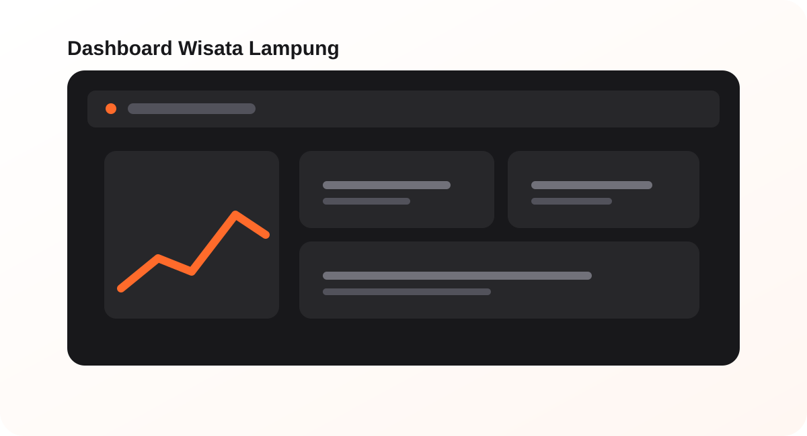
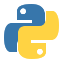
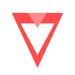
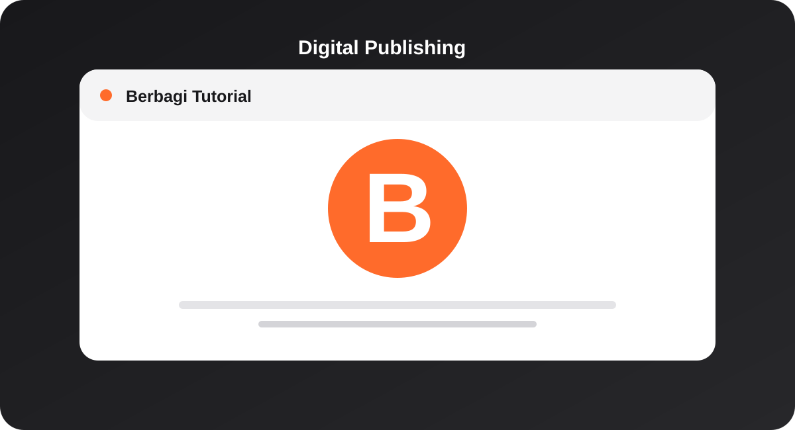
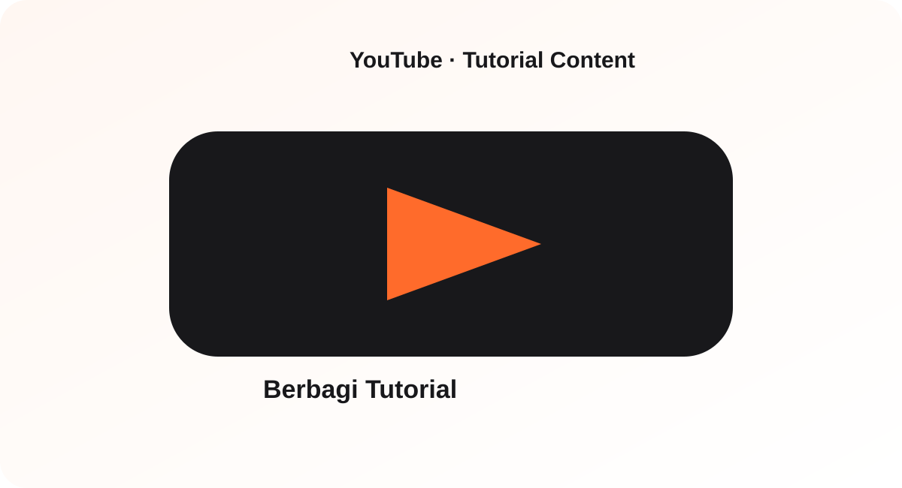

01
Data & Analytics
Data analysis, data visualization, data mining, text mining, business intelligence, and basic machine learning.
PythonPower BIExcel
Information Systems Student
Mahasiswa Sistem Informasi yang interested in Data, IT, Komputer, Database, AI, Networking, dan teknologi digital.
Data
Main interest
IT
Technology
AI
Growing skill
Muhammad Arya Putra
Data • IT • Technology
About me
I'm Muhammad Arya Putra, a Sistem Informasi student at Universitas Teknokrat Indonesia. I enjoy learning how technology, data, and information systems can be turned into useful solutions.
My current interests include data analysis, data mining, business intelligence, database, artificial intelligence, computer technology, and basic networking. I also build personal digital projects through blogging, YouTube, and GitHub.
Education
Universitas Teknokrat Indonesia
Sistem Informasi
My focus
What I work with
Data analysis, data visualization, data mining, text mining, business intelligence, and basic machine learning.
Building small applications, processing data, querying databases, and working with structured or semi-structured data.
Computer troubleshooting, hardware/software support, basic networking, UI/UX, content creation, and digital publishing.
Learning & achievement
A selection of e-certificates that support my learning journey in networking, data, and artificial intelligence.
Portfolio
A mix of digital projects that show how I build, publish, and explore technology.



Python · Streamlit · PandasInteractive tourism dashboard for exploring and visualizing destination data in Lampung.

Personal blog for tutorial and digital content, including game, software, and technology-related posts.

Personal YouTube channel for tutorial and digital content.
Visit channel →More projects
TF-IDF, Sastrawi, and Multinomial Naive Bayes for Indonesian social-media comments.
Gaussian Naive Bayes to classify tourism destinations based on rating, reviews, ticket price, category, and Instagram followers.
UI/UX concept for Second Tech, an online marketplace for buying and selling electronic goods.
Finding association patterns between genre, platform, and publisher in video game sales data.
Experience
2021–2022
Partner Komputer
University
Universitas Teknokrat Indonesia
Active participation in student activities, teamwork, and organizational programs.
Education
2024–Present
Sistem Informasi
2020–2023
Education background before university
More projects
TF-IDF, Sastrawi, and Multinomial Naive Bayes for Indonesian social-media comments.
Gaussian Naive Bayes to classify tourism destinations based on rating, reviews, ticket price, category, and Instagram followers.
UI/UX concept for Second Tech, an online marketplace for buying and selling used or new electronic goods.
Finding association patterns between genre, platform, and publisher in video game sales data.
Get in touch
Open to internship opportunities, project collaboration, networking, and learning opportunities in data, IT, and technology.
Quick profile
Certificate Preview